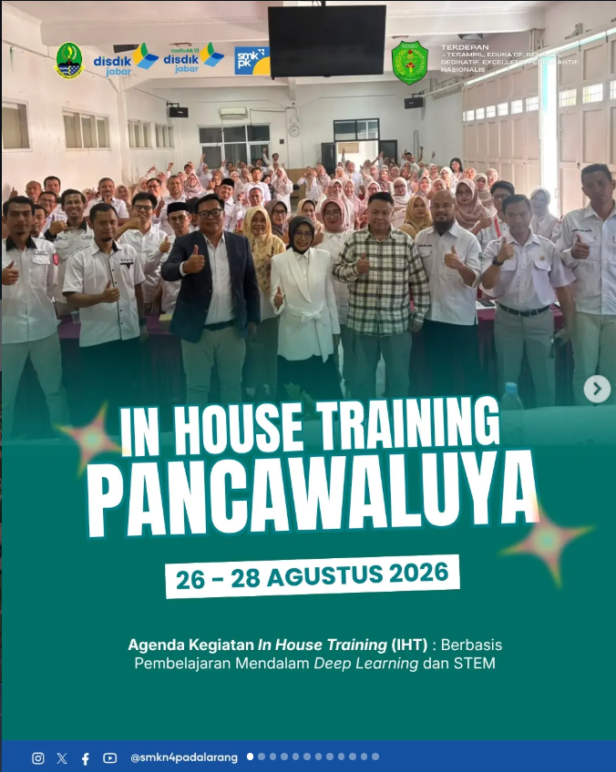
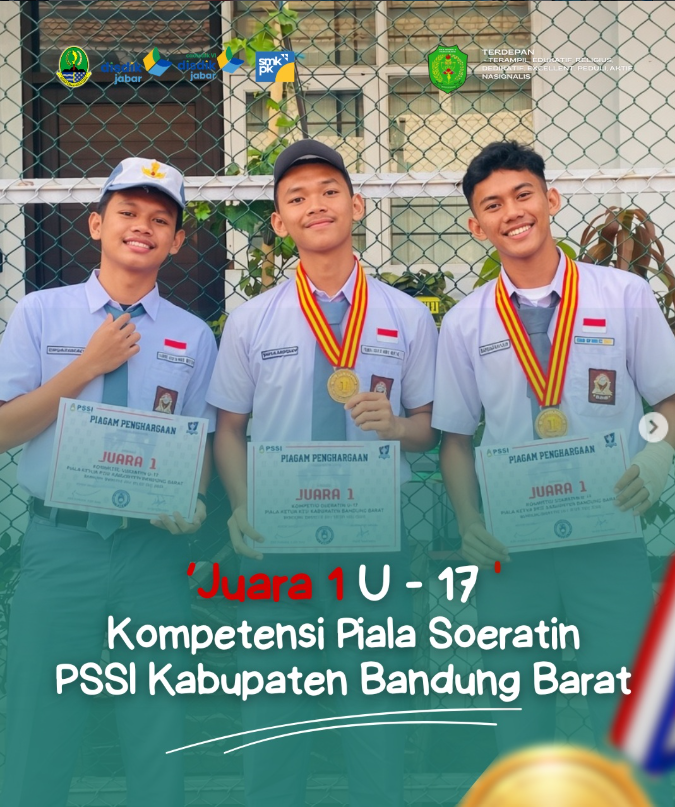
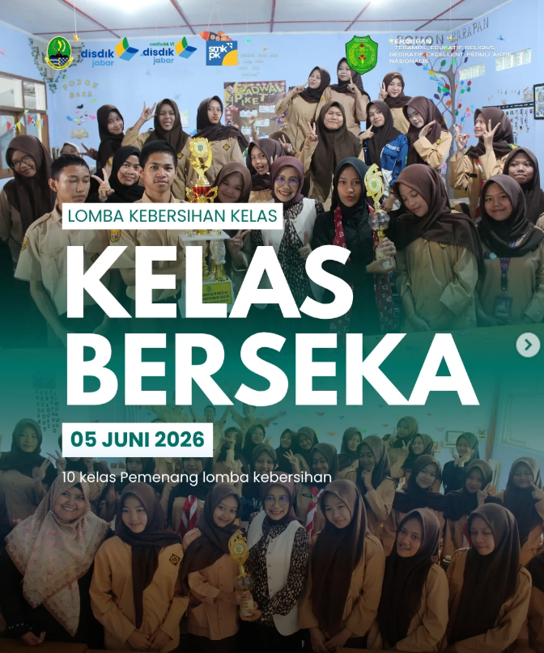

SELAMAT DATANG👋
Selamat datang di website NEPAL-INTERNSHIP FUNDAMENTAL
Temukan informasi, kegiatan, dan berita terbaru dari para siswa.
BERITA TERBARU

10 September 2026
Prestasi dan Penghargaan Siswa
Siswa SMKN 4 Padalarang berhasil meraih prestasi dalam kegiatan yang diikuti sebagai bentuk pengembangan bakat dan kemampuan siswa.

10 September 2026
Kegiatan Futsal Siswa
Kegiatan olahraga futsal menjadi salah satu aktivitas siswa untuk meningkatkan kesehatan, kekompakan, dan kerja sama tim.

8 September 2026
Kegiatan Kebersihan Kelas
Siswa bersama-sama menjaga kebersihan dan kerapian ruang kelas agar kegiatan belajar menjadi lebih nyaman.